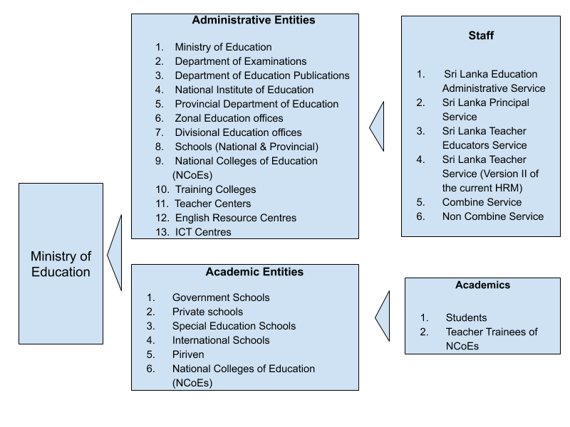

Education Management Software Platform¶
This project is building a set of software to help improve education management in the Ministry of Education. While it is being spearheaded by the Data Management division, the resulting architecture and system will be applicable to all parts of the ministry.
Vision¶
The vision is to build an integrated set of systems that provide a holistic approach to manage primary and secondary education in the country. The goal is not just to be a data & information portal, but also an operational management system for day to operations of the ministry of education ranging from teacher transfers to student admissions to career management to resource allocation to planning.
Note : This system is concerned about operating and managing the education system and is not concerned about education itself.

Organizational Stakeholders¶
Within the Ministry of Education, several parts of the ministry are key stakeholders of the resulting system:
- Ministry of Education (Data Management Branch) - overall responsible for providing data, information and insight about the status of education.
- Department of Examinations - conduct national exams
- Notional Colleges of Education - Preparing future teachers
- ''Suraksha'' Student Insurance Scheme - Health Insurance for entire students (Government, International, Private, Pirivena)
- Department of Education Publications - providing textbooks to students
- School Uniforms - providing material for uniforms for students
- School Health and Nutrition Program - providing mid-day meal for selected primary schools
- School shoes - providing shoes for selected students